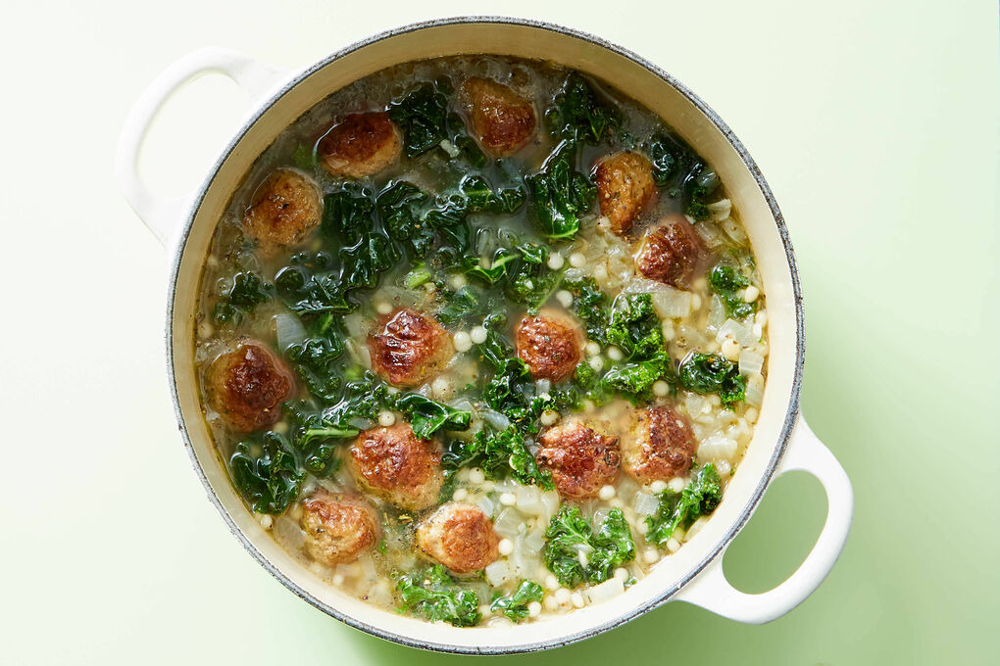

Italian Wedding Soup

Description
This soup contains hearty meatballs and filling couscous. It has an ultra-flavorful broth.
Ingredients
- 2 yellow onions
- 2 (½ lb) pkgs ready to heat beef meatballs
- ¼ oz Italian seasoning
- 2 pkts beef broth concentrate
- 2 (3 oz) Israeli couscous
- 1 bunch curly kale
- olive oil
- garlic
- kosher salt
- ground pepper
- white wine vinegar (or apple cider vinegar)
Steps
-
Cook meatballs & onions
- Finely chop onions
- Head 2 tbsp oil in a large pot over medium-high
- Add meatballs and cook, stirring occasionally, until browned all over, 2-3 min
- Add onions; cook, stirring, until softened, 3-5 min
- Meanwhile, finely chop 1 tablespoon garlic
-
Add aromatics & broth
- To pot with meatballs, add chopped garlic and 2 tbsp of the Italian seasoning; cook, stirring, until fragrant, about 1 min
- Stir in 8 cups water, all of the broth concentrate, 2 tsp salt, and 1 tsp vinegar; bring to a boil over high heat
-
Add couscous
- Stir couscous into soup, then reduce heat to medium-low
- Simmer until couscous is tender, 10-15 min
-
Prep kale
- While soup simmers, strip kale leaves from tough stems; discard stems
- Tear or chop leaves into bite-sized pieces
-
Add kale & serve
- Stir kale into soup and simmer until wilted and softened, about 5 min more
- Season Italian wedding soup to taste with salt and pepper and serve